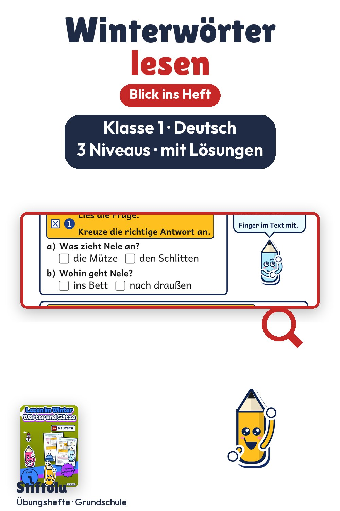

Werbung · Übungsheft von Stiftolu
Lesen im Winter: Wörter und Sätze für Klasse 1 üben

Schnee, Schlitten und ein Vogel: Von diesen Wintergeschichten handeln die kleinen Texte im dritten Kapitel. Davor lesen Erstklässler Winterwörter und ordnen sie Bildern zu, danach prüfen sie kurze Sätze. In den 50 Seiten sind drei Niveaus und Lösungen enthalten, erhältlich auf eduki.